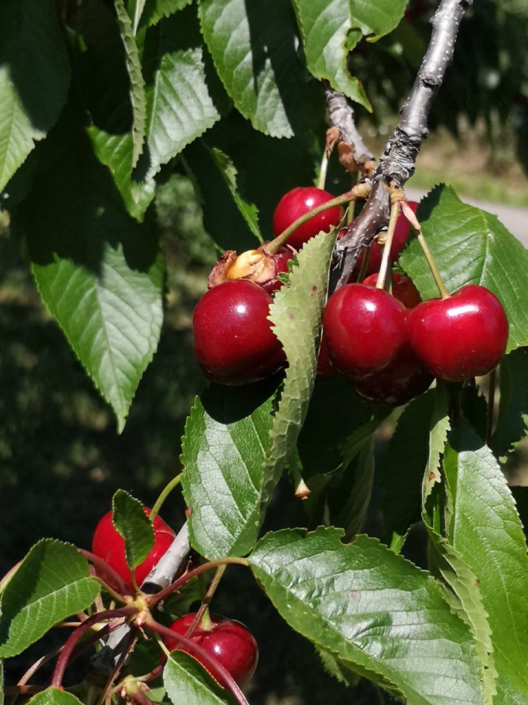
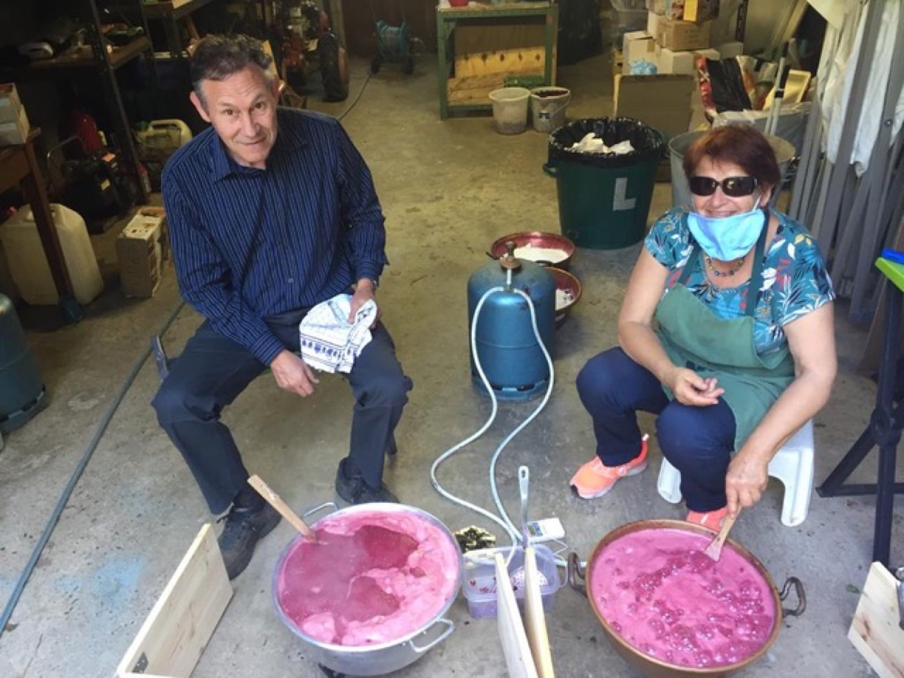

Le verger
La Cerisaie
Nos cerisiers, et les confitures qui en naissent.
Le verger
Un verger de cerisiers
Aux côtés de la vigne, l'association entretient également une cerisaie. Chaque été, les cerises sont récoltées puis transformées en confitures par les bénévoles.
Nombre et variétés de cerisiers, surface du verger : à compléter par l'association.

La confiture maison
Préparée en commun, vendue par l'association

Vente de confiture
Prix du pot : à compléter
Points de vente : à compléter
Période de vente : à compléter
Pour réserver des pots ou en savoir plus, contactez l'association.